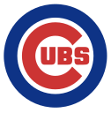

BELIEBTE & BERÜHMTE TEAMS
NEW YORK YANKEES
New York Yankees
Infos:
- Ursprung: In Bronx, New York City. Vorgänger waren die Baltimore Orioles (1901–1902) und die New
York Highlanders (1903–1912), bevor 1913 die New York Yankees entstanden.
- Liga: Die New York Yankees spielen in der Eastern Division der American League.
- Titel: Das Yankees gewannen insgesamt 27 World-Series-Titel und gewannen 40 mal die American
League.
Boston Red Sox
Boston Red Sox
Infos:
- Ursprung:
Ursprünglich kommen die Red Sox aus Toledo in Ohio, wo sie 1891 das Team gründeten.
1900 zogen diese dann nach Boston wo sie 1901-1902 unter dem Namen *Boston Americans* spielten. Bis sie
1907 ihren offiziellen Namen erhielten wechselten sie die Namen noch drei mal.
- Liga: Die Boston Red Sox spielen aktuell in der Eastern Division der American League.
- Titel: Bisher gewannen die Red Sox 9 World-Series-Titel und 14 American-League-Titel.

Chicago Cubs
Infos:
- Ursprung:
Die Chicago Cubs sind der älteste noch aktive US-amerikanische Profi-Sportverein, der
kontinuierlich in derselben Stadt beheimatet ist. Ursprünglich kommen sie aus Chicago, wo sie 1870
gegründet wurden.
- Liga:
Die Chicago Cubs spielen in der Central Division der National League.
- Titel:
Seid ihrere Gründung im Jahr 1870 erzielten die "North Siders" 3 World Series und 17
National-League-Titel, dazu kommen noch 6 Central- und 2 East-Division-Titel.